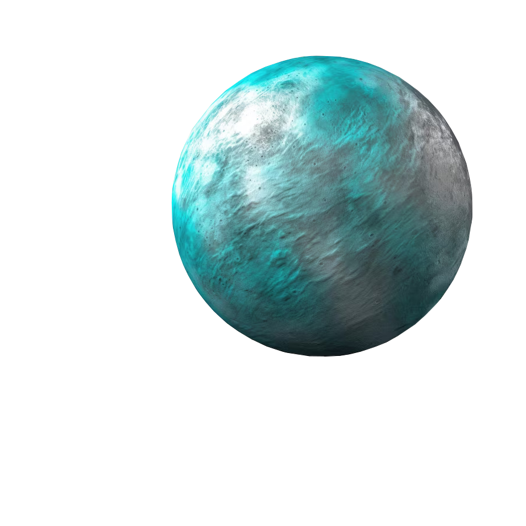

Uran

-
Odkrycie Urana zawdzięczamy Wiliamowi Herschelowi, który dokonał tego 13
marca 1781 roku.
-
Średnica Urana wynosi 50 724 kilometrów, a jego masa jest 14,5 razy
większa od masy Ziemi
-
Kąt nachylenia Urana wynosi około 98 stopni, wobec czego jeden z jego
biegunów zwrócony jest zawsze w kierunku Słońca. Oś obrotu znajduje się
niemalże w płaszczyźnie orbity planety, a więc mniej więcej w pozycji
ziemskiego równika.
- Czas obrotu wokół własnej osi wynosi 17 godzin.
- Uran posiada 27 naturalnych satelitów.
Powrót na stronę główną